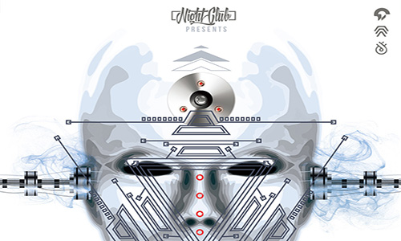
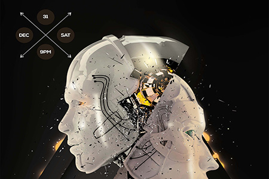

Transition
Darpa's Pivotal Role
The establishment in 1962 of ARPA's Information Processing Techniques Office (IPTO) radically changed the scale of research in AI, propelling it from a collection of small projects into a large-scale, high-profile domain. From the 1960s through the 1990s, DARPA provided the bulk of the nation's support for AI research and thus helped to legitimize AI as an important field of inquiry and influence the scope of related research. Over time, the nature of DARPA's support changed radically—from an emphasis on fundamental research at a limited number of centers of excellence to more broad-based support for applied research tied to military applications—both reflecting and motivating changes in the field of AI itself.
The early academic centers were MIT and Carnegie Tech. Following John McCarthy's move to Stanford in 1963 to create the Stanford Artificial Intelligence Laboratory (SAIL), IPTO worked a similar transformation of AI research at Stanford by making it the third center of excellence in AI. Indeed, the IPTO increased Stanford's allocation in 1965, allowing it to upgrade its computing capabilities and to launch five major team projects in AI research. Commenting in 1984 about how AI-related research at Carnegie Tech migrated out of GSIA into what became an autonomous department (and later a college) of CMU, Newell (1984) captured the transformation wrought by IPTO:
. . . the DARPA support of AI and computer science is a remarkable story of the nurturing of a new scientific field. Not only with MIT, Stanford and CMU, which are now seen as the main DARPA-supported university computer-science research environments, but with other universities as well . . . DARPA began to build excellence in information processing in whatever fashion we thought best. . . . The DARPA effort, or anything similar, had not been in our wildest imaginings. . . .
Another center of excellence—the Stanford Research Institute's (SRI's) Artificial Intelligence Center—emerged a bit later (in 1966), with Charles Rosen at the command. It focused on developing "automatons capable of gathering, processing, and transmitting information in a hostile environment" (Nilsson, 1984). Soon, SRI committed itself to the development of an AI-driven robot, Shakey, as a means to achieve its objective. Shakey's development necessitated extensive basic research in several domains, including planning, natural-language processing, and machine vision. SRI's achievements in these areas (e.g., the STRIPS planning system and work in machine vision) have endured, but changes in the funder's expectations for this research exposed SRI's AI program to substantial criticism in spite of these real achievements.
Under J.C.R. Licklider, Ivan Sutherland, and Robert Taylor, DARPA continued to invest in AI research at CMU, MIT, Stanford, and SRI and, to a lesser extent, other institutions.18 Licklider (1964) asserted that AI was central to DARPA's mission because it was a key to the development of advanced command-and-control systems. Artificial intelligence was a broad category for Licklider (and his immediate successors), who "supported work in problem solving, natural language processing, pattern recognition, heuristic programming, automatic theorem proving, graphics, and intelligent automata. Various problems relating to human-machine communication—tablets, graphic systems, hand-eye coordination—were all pursued with IPTO support" (Norberg and O'Neill, 1996).
These categories were sufficiently broad that researchers like McCarthy, Minsky, and Newell could view their institutions' research, during the first 10 to 15 years of DARPA's AI funding, as essentially unfettered by immediate applications. Moreover, as work in one problem domain spilled over into others easily and naturally, researchers could attack problems from multiple perspectives. Thus, AI was ideally suited to graduate education, and enrollments at each of the AI centers grew rapidly during the first decade of DARPA funding.
DARPA's early support launched a golden age of AI research and rapidly advanced the emergence of a formal discipline. Much of DARPA's funding for AI was contained in larger program initiatives. Licklider considered AI a part of his general charter of Computers, Command, and Control. Project MAC (see Box 4.2), a project on time-shared computing at MIT, allocated roughly one-third of its $2.3 million annual budget to AI research, with few specific objectives.